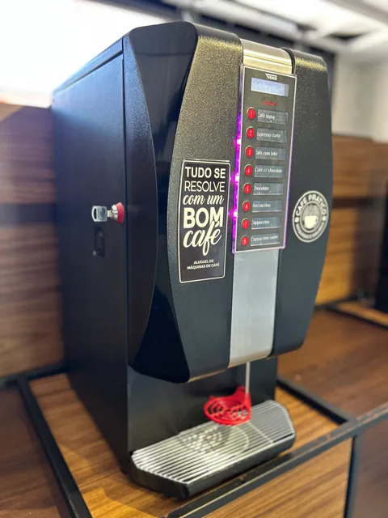
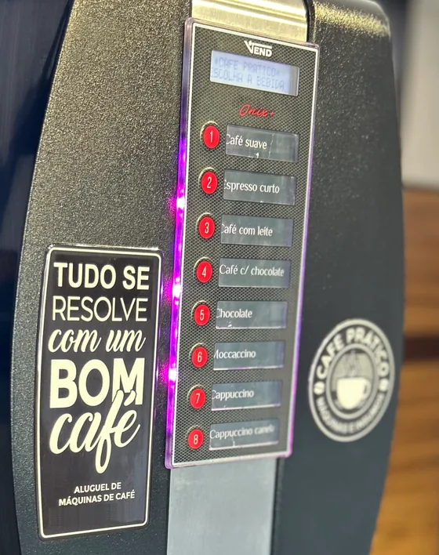
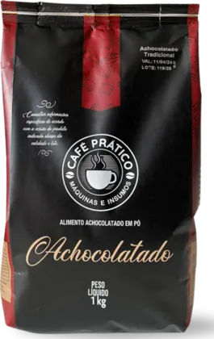
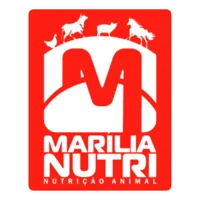
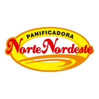

Locação de máquinas de café para empresas
Atendemos Ji-Paraná, Porto Velho e Vilhena, em Rondônia.
Ofereça café de qualidade para seus colaboradores e clientes, com mais economia, praticidade e comodidade para a sua empresa.
- Instalação gratuita em até 72 horas
- Manutenção inclusa
- Suporte técnico especializado
- Insumos com a marca Café Prático

Nota 4,9 no Google, em 27 avaliações da loja de Porto Velho
Como é o cafezinho na sua empresa hoje?
Oferecer um bom café não precisa ser complicado, caro nem tomar o tempo da sua equipe.
- Café frio ao longo do dia?Cada bebida sai quente, na hora em que alguém aperta o botão.
- Desperdício de café e de outros insumos?A máquina usa a dose de cada copo, sem garrafa para jogar fora no fim do dia.
- Colaboradores perdendo tempo com o preparo?Ninguém precisa parar o trabalho para passar café.
- Dificuldade em manter a qualidade das bebidas?O sabor é o mesmo no primeiro e no último café do dia.
- Quer oferecer uma experiência melhor aos seus clientes?Quem chega na recepção escolhe entre oito bebidas.
Com a Café Prático, a sua empresa resolve isso e serve bebidas quentes, saborosas e preparadas na hora.
A máquina de café ideal para o seu negócio
Equipamentos modernos, compactos e fáceis de usar. A equipe ajuda a escolher o modelo pelo tamanho da sua equipe e pelo consumo do dia a dia.

A máquina da foto
- Bebidas
- Oito, escolhidas no botão
- Café
- 100% arábica
- Ligação
- Tomada 220 V
- Aluguel
- A partir de R$ 9,33 por dia
Para equipes maiores ou outras bebidas, a equipe apresenta os outros modelos pelo WhatsApp.
Ideal para
- Escritórios
- Clínicas e consultórios
- Lojas e comércio
- Concessionárias
- Indústrias
- Empresas de pequeno, médio e grande porte
- Eventos corporativos
Por que escolher a Café Prático?
Além da máquina, a Café Prático cuida da instalação, da manutenção e dos insumos, para o café não virar mais uma tarefa na rotina da empresa.
Mais economia
Menos desperdício e mais controle do gasto com café.
Mais produtividade
A equipe deixa de preparar café e segue no que estava fazendo.
Mais qualidade
Bebidas feitas na hora, sempre com o mesmo sabor.
Insumos com marca própria
Leite, achocolatado e cappuccino com a marca Café Prático, e café 100% arábica.
Instalação gratuita
Em até 72 horas, com a máquina em estoque.
Manutenção inclusa
Preventiva e corretiva, sem custo adicional, conforme o contrato.
Suporte técnico especializado
Uma equipe preparada para atender sempre que a empresa precisar.
Faça a conta para a sua equipe
Uma estimativa com o cafezinho. O valor exato a equipe passa na proposta.
Por mês, a partir de
R$ 504Cada caféR$ 0,76já com o aluguel
- Aluguel da máquina
- R$ 280
- 660 cafezinhos no mês
- R$ 224
Quanto mais gente usa, mais barato sai cada café. A conta usa 22 dias úteis, o cafezinho de 50 ml a R$ 0,34 a dose e a máquina de entrada a R$ 9,33 por dia. Cappuccino e chocolate custam mais por dose, e equipes grandes podem precisar de uma máquina maior.
Muito além de um simples cafezinho
Aperte um botão do painel ao lado. São as oito bebidas da máquina que vai para a sua empresa, do café suave ao cappuccino com canela.
O café é gourmet, 100% arábica. Outros modelos têm café expresso, café longo e outras opções, e a equipe mostra as bebidas de cada um.
São os mesmos oito botões da máquina de verdade. Escolha uma bebida.
Cappuccino pronto. Quer essa bebida saindo na sua empresa todo dia? A equipe manda a proposta pelo WhatsApp.
Quero essa máquina na empresaVenda de insumos para a sua empresa
Os produtos para manter a máquina abastecida, com café gourmet 100% arábica e a marca Café Prático no leite, no achocolatado e no cappuccino.
- Café gourmet
- Café gourmet em grãos
- Cappuccino premium
- Achocolatado
- Leite
Um pacote de café de 510 g rende de 510 a 600 cafezinhos de 50 ml.
Um pacote de 1 kg de cappuccino ou chocolate rende de 60 a 70 copos de 100 ml.
Consulte a equipe sobre as condições de fornecimento para a sua cidade.
 Café gourmet
Café gourmet Leite
Leite
Achocolatado Cappuccino
CappuccinoTer uma máquina de café na empresa é mais simples do que parece
Entre em contato
Converse com a equipe pelo WhatsApp e conte um pouco sobre a sua empresa.
Escolha a máquina
A equipe indica o equipamento certo para o tamanho da sua equipe e o consumo.
Receba o equipamento
A instalação é gratuita e segue as condições combinadas na proposta.
Aproveite
Café de qualidade todo dia, com insumos, manutenção e suporte técnico.
Empresas que já escolheram a Café Prático
Algumas das empresas atendidas em Rondônia.





- ★★★★★
“Um lugar muito sofisticado, atendimento ótimo de alta qualidade. Um ambiente amigável e confortável”
- ★★★★★
“Atendimento ótimo e o espaço é muito confortável”
O que os clientes dizem
Depoimentos publicados no site da Café Prático.
Eu não tinha, na empresa, uma pessoa que fosse contratada para fazer café. (...) Hoje, eles estão a um botão de qualquer das 8 bebidas diferentes, padronizadas e muito gostosas. (...) A gente aperta um botão e a bebida está na mão!

“O atendimento é excepcional e a loja tem tudo que o empresário precisa saber sobre cada tipo de máquina.”

“Receber o cliente com o aroma do café é prenúncio de bons negócios.”
“Adquirir uma máquina de café foi a melhor escolha que já fiz, antes eu trabalhava com café na garrafa térmica e não era muito satisfatório pelo fato de esfriar o café (...)”
“Alugamos para o setor que trabalho e foi sucesso total. (...) Não abro a mão do meu chocolate quente todas as manhãs.”
A Café Prático está em Rondônia
Uma equipe em Porto Velho para atender a sua empresa com máquinas de café, insumos e suporte técnico.
Porto Velho
Loja e equipe da Café Prático, no bairro Olaria.
BR-364Ji-Paraná
Atendimento às empresas da cidade.
Vilhena
Atendimento às empresas da cidade.
Onde estamos
Café Prático, filial RondôniaAv. Calama, 1011, sala B
Olaria, Porto Velho (RO)
CEP 76801-309
WhatsApp (69) 98484-4973
Falar com nossa equipe em RondôniaPerguntas frequentes
Como funciona a locação de máquinas de café?
A equipe entende quantas pessoas tomam café e onde a máquina vai ficar, e apresenta os modelos e as condições de locação.
Quanto custa alugar uma máquina de café?
Depende do modelo e do consumo. A máquina de entrada sai a partir de R$ 280 por mês, mais os insumos. A conta desta página dá uma estimativa, e a equipe manda a proposta exata pelo WhatsApp.
A instalação da máquina é gratuita?
Sim. A instalação é gratuita, em até 72 horas com a máquina em estoque, conforme as condições comerciais e a agenda de atendimento na sua cidade.
A manutenção está inclusa na locação?
Sim. A manutenção preventiva e a corretiva estão inclusas, conforme as condições do contrato de locação.
A Café Prático também fornece os insumos?
Sim: café gourmet 100% arábica, café em grãos, cappuccino, achocolatado e leite. No aluguel padrão, a máquina usa os insumos da Café Prático.
Quais cidades de Rondônia são atendidas?
Ji-Paraná, Porto Velho e Vilhena.
Vocês também atendem eventos?
Fale com a equipe pelo WhatsApp para consultar a disponibilidade e as condições para eventos corporativos.
Qual é o prazo mínimo do contrato?
Seis meses. Se precisar cancelar antes, a multa é de dois aluguéis, que cobre a retirada, a desinstalação e a higienização da máquina.
A máquina funciona em tomada 110 V?
Não. Ela precisa de tomada 220 V ou de um transformador indicado pela equipe.
Transforme o cafezinho da sua empresa com a Café Prático
Mais qualidade para os seus clientes, mais praticidade para a equipe e mais economia para o negócio. Converse com a equipe e descubra a máquina certa para a sua empresa.
Em qual cidade fica a sua empresa?